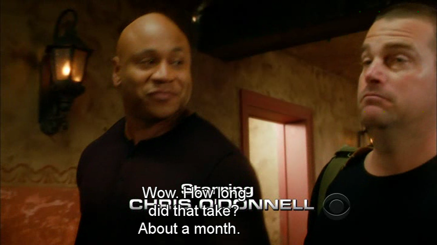
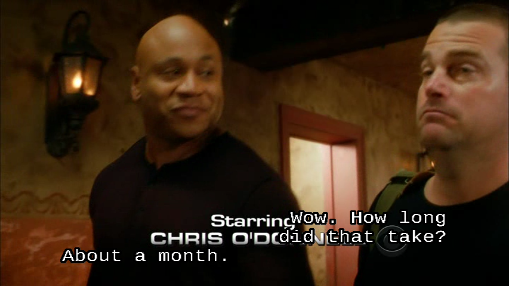
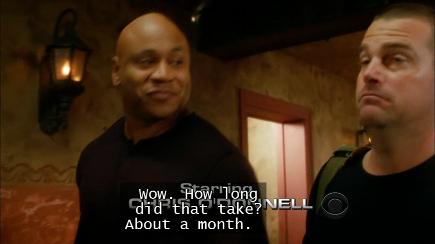
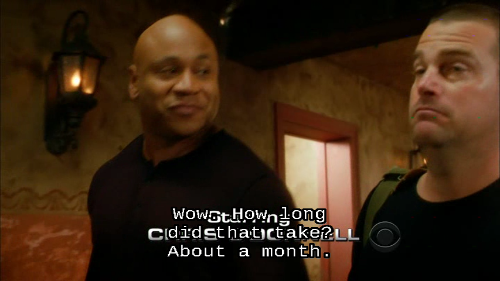
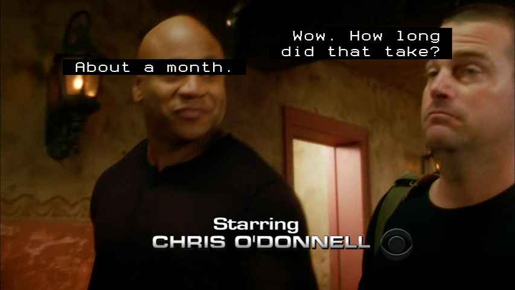

SPUPNG is two acronyms:
Subpictures are used to display subtitles as well as menu buttons, overlaid on the video. These are stored in an MPEG stream (private stream 1) as a sequence of Sub-Picture Units (SPUs).
An Open, Extensible Image Format with Lossless Compression.
The SPUPNG format is intended for use with authoring DVDs. The SPUPNG format does a better job of preserving the original closed caption format than the text based formats supported by ccextractor. Some of the problems with the text based formats are:
They lose row information. Closed captions can be displayed anywhere in a grid of 15 rows by 32 columns. But the text based formats do not indicate on what rows the captions should be displayed. So most applications will display captions near the bottom of the video, where most closed captions are usually placed. However, there are times when the video contains information that closed caption authors take care to not obscure by placing captions on the top rows, and sometimes even in the middle of a video. Captions are often placed at the top of video when the video is displaying text, such as credits, or the name of a speaker in a documentary.
They may lose column information. ccextractor provides whitespace in the text based formats so it is clear where captions should be placed horizontally. But some applications ignore the leading whitespace and simply center the text horizontally. In addition, fonts used to display captions are often proportional width fonts. If the user doesn’t (or cannot) configure the application to use a fixed width font, the way captions are laid out horizontally can be skewed. Information, such as whether the person to the left or right of the video is speaking, can be lost.
They usually don’t look like closed captions. Perhaps this isn’t a bad thing, but if you like the look of closed captions, you’ll like the SPUPNG format.
A picture is worth a thousand words. So here are some screenshots that show how the same caption in the same scene is displayed depending on the ccextractor output format, how an application displays the caption, and how the user configures the application to display the caption. The scene in question has two people engaged in conversation, the caption captures what both people are saying, and it is near the beginning of the show, so credits are displayed near the bottom of the scene.

The above screenshot shows how a SRT formatted caption is displayed by VLC using VLC’s default configuration where captions are displayed using the Arial font. Both people are talking, but can you tell who is saying what? Can you read the credit? Here is how the caption is encoded in the .srt file:
20
00:02:15,636 --> 00:02:18,770
Wow. How long
did that take?
About a month.

The above screenshot shows how the dvdauthor tool, spumux, renders the same SRT formatted caption. I’ll explain spumux in a later section. Now you can tell who is saying what, but it is still hard to read the credit.

The above screenshot shows how a SAMI formatted caption is displayed by VLC after VLC’s Subtitles/OSD preferences have been configured to use a fixed width font, Lucida Console, and the “Add a background” option has been checked. Here is how the caption is encoded in the .smi file:
<SYNC start=135636><P class="UNKNOWNCC">
Wow. How long<br>
did that take?<br>
About a month. <br>
</P></SYNC>
Who is speaking is clear in the .smi file, but not when VLC displays the caption. And the credit is even harder to read with the “Add a background” option enabled.

The above screenshot shows how spumux renders the same SAMI formatted caption. In this case, spumux centers the text, so who is speaking is lost.

The above screenshot shows how spumux renders the SPUPNG formatted caption. It is clear who is saying what, and the credit is not obscured by the caption.
The SPUPNG format was designed to be used with the
dvdauthor tool, spumux. According to the
dvdauthor home page:
DVDAuthor is a set of tools to help you author the file
and directory structure of a DVD-Video disc, including programmatic
commands for implementing interactive behaviour.
According to the
spumux man page:
spumux -- generates and multiplexes subtitles
into an existing mpeg2 program stream
This section describes how to use the SPUPNG format to create a very simple DVD-Video that plays one video. The procedure assumes a computer with a DVD burner running a Ubuntu flavor of Linux with the dvdauthor, ffmpeg (or libav-tools) and dvd+rw-tools packages installed. The tools in these packages are designed to be used from the command line and the dvdauthor tools are driven by XML files. A number of graphical user interface front ends for these packages are also available, some of which have been ported to Windows, along with the underlying dvdauthor and ffmpeg/libav-tools packages. More information can be found at the dvdauthor home page. I have not used any of the Windows applications, so their use is beyond my area of expertise.
ccextractor -out=spupng -o spumux.xml source-video-file
This command will create the file, spumux.xml
and a sub-directory, spumux.d.
The sub-directory will contain lots of PNG files named subNNNN.png
where NNNN is
the 4 digit number of a closed caption starting at 0000.
For example, the source video file used for the example screenshots,
was one hour long and generated 1052 PNG files named sub0000.png to
sub1052.png. Longer videos or videos with roll-up captions will
generate more PNG files.
Different Linux distributions will support either the ffmpeg package or the libav-tools package. The ffmpeg/avconv programs are complex and require many command line options to get the desired result. I maintain a shell script, do-ffmpeg, which I edit as needed to select:
Cropping options, useful when the source video is letterboxed,
Video bit rate (which determines how many hours can fit on a DVD with a tradeoff on quality),
Video resolution (the DVD standard allows four different resolutions for NTSC and PAL each, I will usually use the most common, 720x480, but if the source video width is 704, I will use 704x480),
Audio codec. I always try to copy the source video audio, but sometimes there is noise in the source that throws audio and video out of sync. In that case, I use options that transcode the audio and help maintain a/v sync.
Whether to deinterlace. I usually do.
Aspect ratio, either. 16:9 or 4:3.
Here is the do-ffmpeg
script for ffmpeg version 0.6:
#!/bin/bash # Transcode video to DVD-Video compatible format. # Usage: do-ffmpeg infile outfile if [ $# != 2 ] then echo "Usage: do-ffmpeg infile outfile" exit 1 fi # options of interest (applicable to ffmpeg version 0.6): # Cropping: # If a widescreen video is letterboxed in a 4:3 aspect ratio, # you might want to crop the letterboxed format, using the following: #crop="-croptop 60 -cropbottom 60" # Sometimes you get a 4:3 video that's been letterboxed on the sides, too: #crop="-cropleft 4 -cropright 12" # Bitrate determines the size and quality of the video: # 4670k = approx 2 hours of video on a 4.7GB single layer DVD # 3200k = approx 3 hours of video on a 4.7GB single layer DVD # 2400k = approx 4 hours of video on a 4.7GB single layer DVD bitrate=2400k # Video resolution: # Valid values for NTSC DVD-Video are: 720x480 704x480 352x480 352x240 # Valid values for PAL DVD-Video are: 720x576 704x576 352x576 352x288 # I usually use 720x480, unless the input is 704x480, then I use 704x480 size=704x480 # Audio codec # If input file's audio is AC-3 or MPEG layer-2, you can usually let # ffmpeg copy it, using the following value for $acodec acodec="-acodec copy" # If the input audio isn't one of the above, or if there is noise in the audio # stream that throws audio-video out of sync, the following usually fixes it. #acodec="-acodec ac3 -ab 192k -ac 2 -async 1200" # Whether to deinterlace video: deint="-deinterlace" # Aspect ratio: # 16:6 = widescreen # 4:3 = fullscreen aspect="4:3" ffmpeg -threads 4 -v 1 -i $1 $crop $deint \ -r ntsc -target dvd -b $bitrate -s $size \ $acodec -copyts -aspect $aspect \ -y $2
The script will need tweaking if you use a distribution that supports libav-tools or a newer version of ffmpeg. The cropping options become something like:
#crop="-vf crop=in_w*3/4:in_h*3/4,scale=720:480" #crop="-vf crop=in_w:in_h*3/4,scale=720:480"
The audio codec options become:
acodec="-c:a copy" #acodec="-c:a ac3 -b:a 192k -ac 2 -async 1200"
The command becomes:
avconv -threads 4 -v debug -i $1 $deint $crop \ -r ntsc -target ntsc-dvd -b:v $bitrate -s $size -copyts \ $acodec -aspect $aspect \ -y $2
After editing the script, transcode the source video with the command:
do-ffmpeg source-video-file transcoded.mpg
spumux spumux.xml < transcoded.mpg > subtitles.mpg
Dvdauthor requires an XML file as input. Following
is an extremely simple example that should start playing the
subtitles.mpg as soon
as the DVD is loaded in your DVD player. Paste it into a file called
dvdauthor.xml.
<?xml version="1.0" encoding="UTF-8"?>
<dvdauthor>
<vmgm />
<titleset>
<titles>
<video aspect="4:3" format="ntsc" />
<audio format="ac3" lang="en"/>
<subpicture lang="en" >
<!-- doesn't work w/ dvdauthor 0.6.18 despite being documented in man page
<stream mode="normal" id="0" content="forced" />
-->
</subpicture>
<pgc>
<vob file="subtitles.mpg" />
</pgc>
</titles>
</titleset>
</dvdauthor>
If you change the name of the output file,
subtitles.mpg, in step
3, be sure to change it in the <vob> element. Create the
DVD-Video directory structure in a sub-directory called dvd with the command:
dvdauthor -o dvd -x dvdauthor.xml
If you repeat the command, be sure to first delete the dvd
sub-directory.
Load a blank DVD into your DVD burner. Then burn with this command:
growisofs
-dvd-video -V 'MyLabel' –Z /dev/dvd dvd
The video should start playing as soon as the DVD is read by your player. You will need to turn on subtitles using whatever mechanism your player supports, perhaps by pressing a subtitle key on the remote. Enjoy!